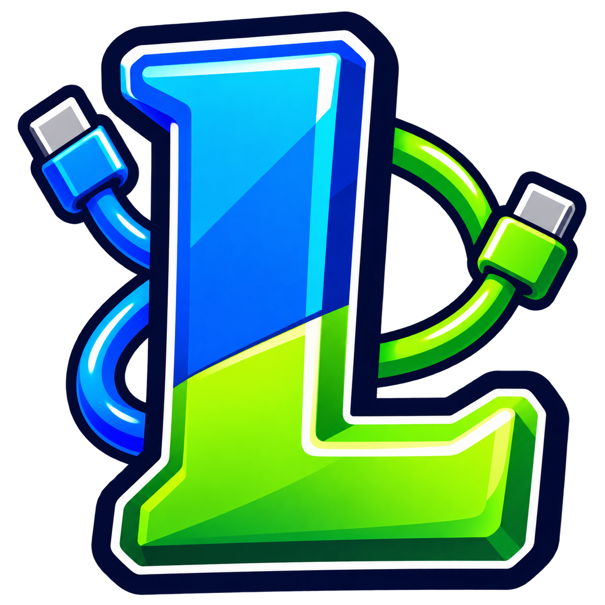
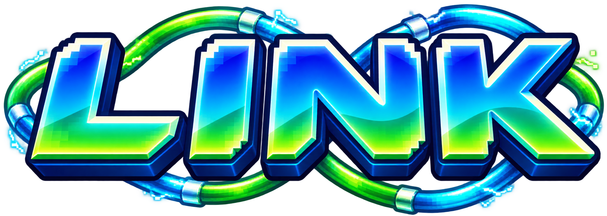
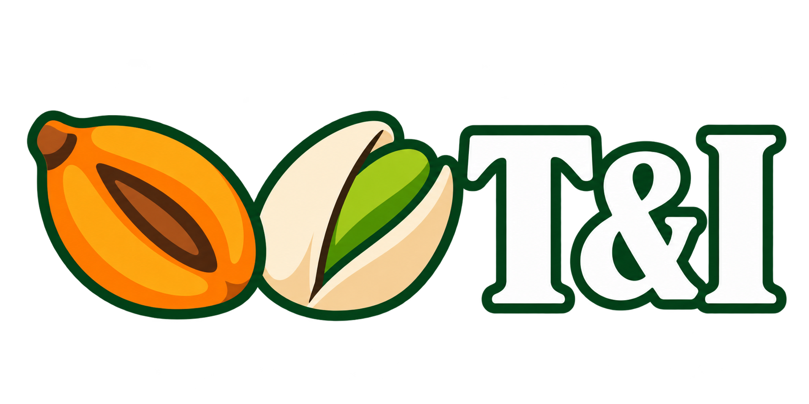

Intercambiar
Selecciona una partida por jugador. El programa abre las dos ventanas enlazadas de mGBA; el intercambio se completa dentro de los juegos.

PK LINK
Prepara intercambios y combates en tu PC con las partidas que ya juegas en tu consola portátil.

PK Link reúne la selección de juegos, la preparación de las partidas y los emuladores en un mismo lugar. Trabaja con copias y te permite exportar los guardados al terminar.
Selecciona una partida por jugador. El programa abre las dos ventanas enlazadas de mGBA; el intercambio se completa dentro de los juegos.
Prepara el combate clásico. También puedes configurar Colosseum/XD con Dolphin para el modo 3D, cuya conexión completa todavía está en pruebas.
Guarda dentro del juego y apaga correctamente la consola. Conecta la tarjeta con un lector o elige la carpeta donde tienes los juegos y guardados.
Abre Intercambiar o Combatir, sincroniza y selecciona el juego y la partida de cada jugador. Usa teclado o mandos compatibles de PC.
Completa la sesión en el emulador, guarda dentro de ambos juegos y ciérralo. Exporta las partidas a las tarjetas desde PK Link.
Una interfaz renovada con controles de sonido pixel art, ayuda dentro de Ajustes y la firma T&I. El instalador incluye los emuladores y accesos directos. Tus sesiones y ajustes se conservan al desinstalar.
Windows de 64 bits · Versión 0.4.2 · 122 MiB
Puede utilizar los juegos y guardados compatibles que estén accesibles en el PC. No convierte cualquier conexión USB en acceso a las tarjetas ni utiliza las consolas como mandos. Si el PC no ve los archivos, usa un lector de tarjetas.
Están comprobados el instalador, la preparación de guardados y la conexión a la sala de intercambio con Rojo Fuego y Verde Hoja. El intercambio completo y las demás combinaciones requieren pruebas. El modo 3D de Colosseum/XD requiere sus archivos y una prueba real de conexión; Stadium y Stadium 2 aún no están integrados.
El guardado creado desde el menú del propio juego, normalmente .sav o .srm. Los estados rápidos del emulador no sirven. Guarda antes de apagar la consola.
No. El instalador incluye la aplicación, los emuladores, sus licencias y fuentes. Añade tus archivos de juegos y, para Colosseum/XD, la BIOS de GBA. No subas tus partidas a esta web: la aplicación trabaja en tu PC.